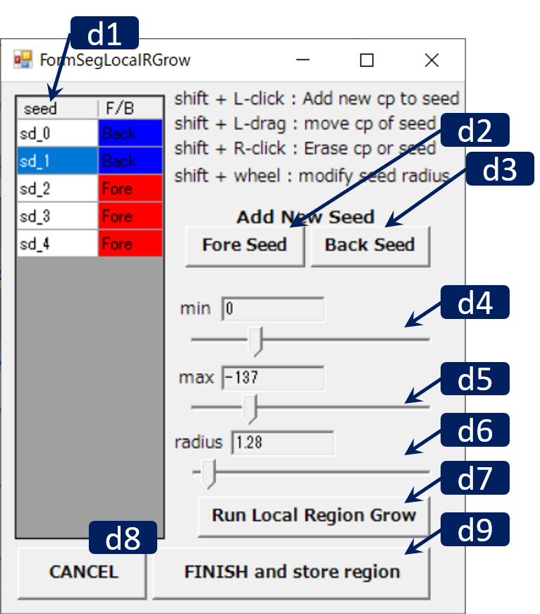

Segmentation Local Region Growing

RoiPainter I/O Visualization Segmentation Download code (github)
Segmentation Local Region Growing
このツールは，影響範囲を限定した領域拡張が行えます．具体的には，3次元空間に球状のシードを複数配置し，それぞれに異なる閾値を設定すると，各シード領域内部領域拡張が計算され，その和集合が領域として抽出されます．また，前もって背景領域を作成するNegativeなシードも配置可能です．Negativeしーどが配置された場合，まずNegativeシードの領域拡張を計算し背景領域を作成した下で，前景領域の領域拡張が計算されます．これにより，望まない領域の染み出しを防ぐことが可能です．
Workflow
- シードの配置 : ポジティブ，ネガティブの2種類の特性を持ったシードを複数配置し，その影響範囲と閾値を設定する．
※シードは，球形状 or 円筒形状．生成時は球形状だが，制御点を追加するとポリラインに沿った円筒形状になる．
※シード配置中は，複数シードのうちある一つのシードがアクティブになっており，そのシードに対して編集作業を行える．
※各シードの半径，最小・最大輝度値を指定 - 領域分割実行 : ダイアログのRun Region Growingをクリックし領域分割処理を実行し結果を確認する．
- 終了し登録 : ダイアログ右下のFinish And Storeをクリック．
メインウインドウの操作方法
- マウス L/M/R ドラッグ : 視点の平行移動/ズーム/回転
- マウス ホイール : 切断面の前後移動
- Ctrl + L ドラッグ : 曲面切断面の生成
- Ctrl + L クリック : 曲面切断面の削除
- ※ダイアログの"Fore Seed" / "Back Seed"ボタンより新しいシードを追加できる．
- Shift + マウスLクリック :
断面をクリックした場合 --> 現在アクティブなシードに新しい制御点を追加
あるシードの制御点をクリックした場合 -> そのシードをアクティブにし制御点をドラッグで移動可能
※あるシードに複数制御点を指定すると，シリンダー状のシードを配置可能 - Shift + マウスRクリック : シードの制御点を削除
- Shift + マウスホイール : アクティブなシードの半径を変更
ダイアログの操作方法
 d1. Seed List - 配置したシードの情報が提示され，ある行をクリックするとそのシードをアクティブにできる．d2. Fore Seedボタン - 新しいポジティブシードを生成
d3. Back Seedボタン - 新しいネガティブシードを生成
※生成されたシードは3次元空間の中心付近に配置され，shift+左ドラッグで移動できる． d4, d5. 最小値/最大値指定スライダ - アクティブなシードの最小/最大閾値を指定できる．
d6. 半径指定スライダ - アクティブなシードの半径を指定できる．
d7. Run Local Region Growingボタン - 領域拡張を計算する．何度でも実行可能．（シードの位置やパラメータを修正するたび実行するとよいです．）
d8. Cancelボタン - 作業中止（作業内容が消えるため要注意）
d9. Finish And Storeボタン - 作業を終了し現在の領域を登録する